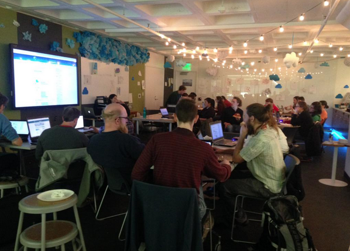

Offie Hours
This month, we are doing something a little different for Maptime. We are going to be available to answer any and all of your mapping questions rather than going through a tutorial or specific aspect of mapping.
Come by The Bubbler on July 22nd and let us help you. Some ideas of how you can use these mapping office hours:
- Get feedback on a mapping project that you're currently working on.
- Come with general questions about maps.
- Specific questions about a certain software or application.
- Talk through how to get started on a mapping project that you're thinking about.
- Play around with some of the topics and tools we've covered in the past, including QGIS, CartoDB, OpenStreetMap, and Leaflet.
We will also have FREE PIZZA provided by CartoDB. Woo hoo!
Supplies:
If you have a specific project that you want to take a look at, be sure to bring it (or have it accessible online somewhere so we can look at it using the Bubbler’s computers). Otherwise, we have laptops to borrow supplied to us by the Bubbler.
Where and When?
July 22nd 6pm - 8pm @ Madison Public Library: Central Library @ the Bubbler
Web Maps + Leaflet 101
Want to learn how to make your very own web map? At this next Maptime we will be learning how to make a basic web map using an open source API Leaflet. Using Leaflet we will cover how to add markers, polygons and lines to our maps and start adding basic interactions.
New to mapping and or javascript? No worries, @KatieKowalsky and @RashaunaMead will be starting from the beginning. All skill levels are welcomed!
Supplies
If you have a laptop that you would want to use please bring it. Otherwise, we have laptops to borrow supplied to us by the Bubbler.
When and Where?
Tuesday May. 19 6pm - 8pm @ Madison Public Library: Central Library @ the Bubbler
201 W Mifflin St Madison, WI 53703
Madison Mapathon!
OpenStreetMap (OSM), the project that creates and distributes free geographic data for the world, is holding its annual Spring Mapathon to improve the quality of the map and to teach people how to add information to OpenStreetMap. Maptime Madison will be holding an outdoor/indoor mapping event for this occasion.
After a brief introduction to OSM we will survey the area around the Capitol and then reconvene at the Bubbler to add the collected information to the OSM database. This is a great event for both beginners, OSM veterans, and anyone in between – no prior knowledge required.
Supplies
Useful things to bring (but not required): clipboard and pencil for taking notes smartphone/tablet (we will discuss some useful apps during the introduction) digital camera (with or without GPS) GPS receiver laptop (there will be laptops available at the Bubbler, but maybe you prefer to work on your own machine) food and drink
If you have mobility impairments or just plain prefer “armchair mapping,” you also have the option of staying at the Bubbler during the survey and improving OSM from there. We will provide some printed maps. Please make sure to RSVP to make planning easier for us.
When and Where?
Sunday, April 12th at 1pm @ Madison Public Library: Central Library @ the Bubbler
201 W Mifflin St Madison, WI 53703
Event Recap QGIS 101
Event Recap
We had a great time learning QGIS with @Robin!

QGIS is an awesome open source GIS software that we’ll definitely be including more lessons on in the future, be sure to check out Robin’s slides if you couldn’t make it here. If you attended this month’s meeting and want to find more resources on QGIS, check out the GIS Stack Exchange or the collection of resources on Maptime’s website.
Thanks again to CartoDB for providing us with free pizza for this month’s meeting.
Next Maptime!
We’re so glad we had a packed audience for our QGIS event, we’ll be announcing our April meeting very shortly. Join our mailing list or follow us on Twitter @Maptime Madison for more news!
QGIS 101
Love maps? Want to learn to make your own? Or perhaps you have been using ArcGIS for years but want to know what else is out there. Join us to learn about QGIS, a free, open-source mapping software.
We’ll learn from @Robin about getting started with QGIS. We’ll walk through downloading data from Natural Earth and then getting started with making your own map. Or feel free to bring whatever data you want to map, and we’ll go through how QGIS works.
The library provides some laptops, but if you want to bring your own, feel free to do so. If you do, we recommend downloading QGIS ahead of time.
Aspiring mapmakers of all levels welcome, including beginners! Be sure to follow us on Twitter @MaptimeMadison to find out about future events.
Everyone is welcome and encouraged to join in on the fun!

Supplies
Bring a laptop if you want to use your own, otherwise we will have some to borrow. If you already have QGIS installed, great! If not, try and download ahead of time.
When and Where?
Wednesday, March 11th 6pm - 8pm @ Madison Public Library: Central Library @ the Bubbler
201 W Mifflin St Madison, WI 53703